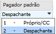
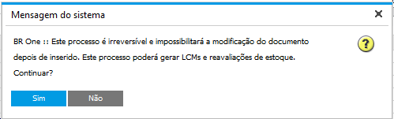
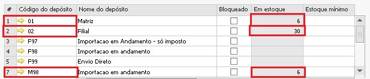
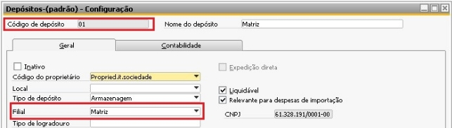
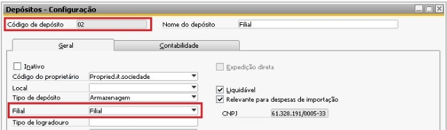
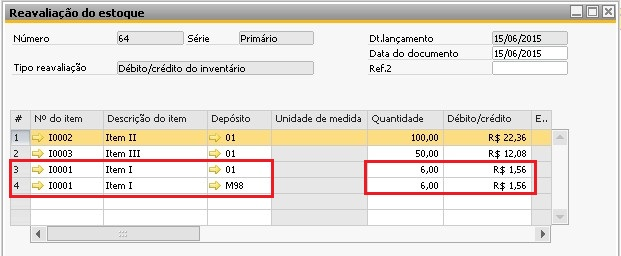
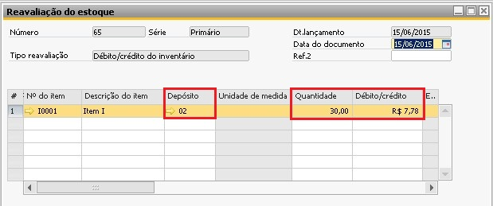
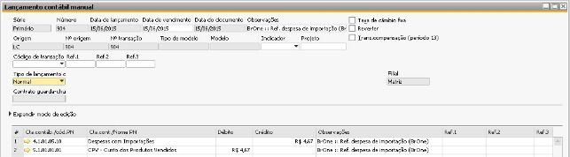

Despesas Importação
A funcionalidade de despesas de importação é o processo no qual pega o custo obtido com as despesas de importação e agrega este valor nos produtos do processo através de uma reavaliação dos itens no estoque, todas essas despesas são somadas ao valor do produto, de forma a incluir o custo total das despesas de importação ao item, além disso esta funcionalidade gera o contas a pagar para os pagadores padrões de cada despesa.
Ao clicar no botão Despesas importação, será aberta a tela na qual aparecerá no cabeçalho os dados do fornecedor do processo, o número do documento de Despesas de importação, data de criação e a flag de Considerar depósitos utilizados, abaixo na aba de conteúdo são exibidos os itens do processo de importação e na aba Custos são exibidas as despesas de importação.


A aba de Custos da tela de Despesas de importação traz os dados configurados previamente na tela de Despesa de importação - Definição, sendo possível alterar os campos conforme a necessidade de cada processo de importação.

No cabeçalho, o usuário poderá alterar os campos de data de vencimento e data do documento, bem como marcar ou desmarcar a configuração de “Considerar depósitos utilizados”, já na aba de Conteúdo as colunas Peso (kg) e Volume estarão disponíveis para preenchimento e na aba Custos todas as colunas poderão ser alteradas.
Além disso, é possível acrescentar uma observação.
O campo de Alocação por da aba Custos possui as seguintes opções:
Valor em dinheiro antes da taxa aduaneira: Valor da Linha / Valor de todas as linhas * Valor total das despesas;
Valor em dinheiro após taxa aduaneira: Valor da Linha / Valor de todas as linhas * Valor total das despesas;
Quantidade: Os custos relacionados são distribuídos de acordo com a quantidade de um item em proporção à quantidade total. (Quantidade da linha / Quantidade de todas as linhas) * Valor total das despesas;
Peso: Os custos relacionados são distribuídos de acordo com o peso de um item em proporção à quantidade total. (Peso da linha / Peso de todas as linhas) * Valor total das despesas;
Volume: Os custos relacionados são distribuídos de acordo com o volume de um item em proporção à quantidade total. (Volume da linha / Volume de todas as linhas) * Valor total das despesas;
Igual a: Os custos relacionados são distribuídos igualmente entre os itens. Valor total das despesas / número de linhas;
Já o campo de Pagador padrão da aba Custos possui as seguintes opções:
{kind=link}
Ao selecionar a opção de Próprio/CC será utilizada a conta contábil já definida no campo Conta de alocação de despesas de importação, da própria tela de despesas de importação. Caso seja selecionada a opção de Despachante será considerada a conta contábil de adiantamento da aba Contabilidade do cadastro do parceiro de negócio de definido como Despachante do processo.
Após preenchimento dos campos da aba custo é necessário clicar no botão do canto inferior direito “Atualizar cálculos” para só assim prosseguir com o processo.
Caso todas as colunas estejam iguais a 0 e o usuário clicar em Atualizar cálculos, a seguinte mensagem será exibida:
{kind=link}
BR One :: A soma dos custos não pode ser menor ou igual a zero.
Ao clicar em Adicionar, a seguinte mensagem será exibida:
{kind=link}
BR One :: Este processo é irreversível e impossibilitará a modificação do documento depois de inserido. Este processo poderá gerar LCMs e reavaliações de estoque. Continuar?
Ao clicar em Sim, o processo será adicionado. Após inserir a despesa de importação, ela poderá ser consultada na tela de detalhes, através do botão […].

Caso seja clicado no botão Despesas Importação com despesas já criadas, a seguinte mensagem será exibida:

BR One :: Já existe lançamento de despesas de importação para este processo. Deseja criar um novo lançamento?
Ao clicar em Sim, será criado um outro lançamento e Não abortará o processo.
O processo de despesas de importação só considera as quantidades existentes em estoque dos depósitos que tenham o flag Relevante para despesas de importação marcado. Caso não esteja mesmo tendo o produto em estoque, o BR One não irá reavaliar o estoque, e sim fazer um lançamento direto para a conta de CPV.
Ao criar uma despesa, será gerada uma Reavaliação de estoque, um LCM ou ambos:
Caso seja um item não estocável, não será feita reavaliação de estoque, somente um LCM no qual será creditado o valor do Pagador Padrão (se for despachante é a conta de adiantamento do despachante do processo, se for próprio/CC será a conta de alocação definida na tela Despesas de importação) e debitado na Conta ‘Conta do Razão’ definida na linha do item da NF de Nacionalização.
Caso seja um item estocável, irá verificar se a flag “Considerar depósitos utilizados está marcada.
Se sim, será verificado se há quantidade de itens nos depósitos utilizados na nacionalização e no recebimento de mercadoria, e se esses depósitos possuem em sua definição a flag Relevante para despesas de importação marcada.
Caso esteja marcada e há quantidade de itens nos depósitos utilizados: será feita uma reavaliação de estoque dos itens para os depósitos em questão, o LCM gerado neste processo por padrão debita na conta transitória de estoque e credita na conta do pagador padrão da despesa. Caso seja encontrada uma quantidade parcial, irá debitar o valor da diferença na conta de CPV
Caso esteja marcada e não há quantidade de itens nos depósitos utilizados: Não é feita uma reavaliação de estoque, somente um LCM que irá creditar na conta transitória de estoque e debitar na conta do CPV.
Caso não esteja marcada a flag Relevante para despesas de importação nos depósitos: Não será feita uma reavaliação de estoque dos itens, somente um LCM que irá creditar na conta transitória de estoque e debitar na conta do CPV.
Se a flag “Considerar depósitos utilizados não estiver marcada, irá verificar quais depósitos tem a flag Relevante para despesas de importação marcado e, após verificar, será feita a reavaliação de acordo com as quantidades disponíveis em estoque.
Caso encontre um depósito que contenha a flag Relevante para despesas de importação marcada e tenha itens em seu estoque será feita uma reavaliação de estoque dos itens para os depósitos em questão, e um LCM debitando na conta transitória de estoque e creditando na conta do pagador padrão da despesa. Caso seja encontrada uma quantidade parcial, irá debitar o valor da diferença na conta de CPV.
Caso não encontre nenhum depósito que contenha a flag Relevante para despesas de importação marcada, não será feita uma reavaliação de estoque dos itens, somente um LCM que irá creditar na conta transitória de estoque e debitar na conta do CPV.
Detalhes dos cálculos das reavaliações
Exemplo: Há os itens A1, A2 e B1 para lançar as despesas de importação, com quantidades 10, 20 e 100 respectivamente e com valor de custo de alocação igual a 100 para todos.
Os depósitos A e B são os únicos que contém o flag Relevante para despesas de importação marcado. Para cada item há a quantidade disponível em cada depósito:
Então, será distribuído entre os depósitos que tem estoque os itens para fazer a reavaliação. O valor da coluna Débito/crédito será calculada da seguinte forma:
(Valor custo alocação / Quantidade do item) x Quantidade do estoque
Exemplo item A1 depósito A : (100 / 10) * 5 = R$50.
Como visto, para o item A2 faltaram 5 quantidades em estoque e para o item B1 não havia estoque em nenhum depósito. Então, para esses itens sem estoque será feita um LCM com a soma dos valores, que serão feitos da seguinte forma:
(Valor custo alocação / Quantidade do item) * Quantidade do estoque
Exemplo item A2 : (100 / 20) * 5 = R$25.
Se todos os itens tiverem estoque, então o LCM não será feito. Se todos os itens não tiverem estoque, só será feito um LCM.
Também há o caso quando o item possui estoque em depósitos com filiais diferentes. Quando isso ocorrer, as regras de cálculo de valor de alocação e de quantidade do item continuam as mesmas citadas acima, porém, os documentos de Reavaliação de estoque serão gerados por filial, isto é, no final do processo haverá um documento para cada filial que foi utilizada.
As imagens abaixo exemplificam essa situação:
{kind=link}
O item I0001 possui quantidade 42 nos depósitos que estão configurados como Relevantes para importação: 01, 02 e M98; sendo que os depósitos 01 e M98 pertencem a uma filial e o 02 a outra filial, como mostra o detalhe abaixo.
 {kind=link}
{kind=link}

Foi adicionado um processo de importação de maneira que o item I0001 tivesse quantidade de 60, que é maior do que o existente em todos os depósitos.
{kind=link}
Após adicionar o documento de despesas de importação, temos uma reavaliação do estoque para todos os itens e quantidades existentes na filial Matriz.
{kind=link}
E em outra reavaliação, todos os itens que precisaram utilizar quantidades de outra filial.
{kind=link}
Por fim, o lançamento contábil referente ao item I0001, com valor calculado na quantidade de 18 unidades que não foram reavaliadas por não existirem nos depósitos do processo.
Possíveis ocorrências durante o processo
Antes de criar as Despesas de Importação, é necessário inserir os itens do pedido de compra. Caso os itens não tenham sido inseridos e o usuário clique no botão Despesas importação, a seguinte mensagem será exibida:
{kind=link}
BR One :: Antes de gerar as Despesas de importação é necessário inserir os itens.
As Despesas de Importação devem ser criadas após a NF Nacionalização. Caso ela não tenha sido criada e o usuário clique em Despesas importação, a seguinte mensagem será exibida:

BR One :: Realize o processo de NF Nacionalização antes de realizar este processo.